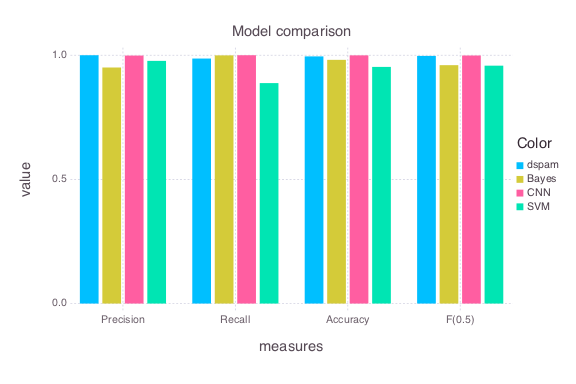
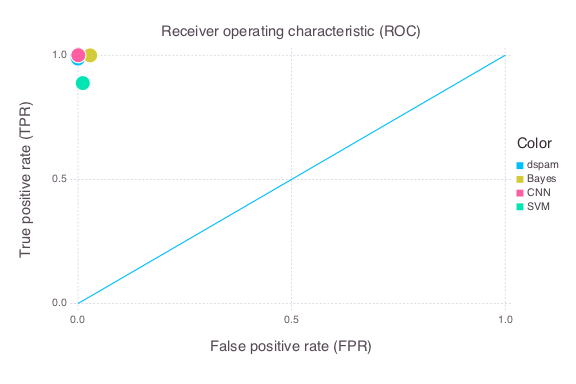

This year's course Machine Learning 1 included work on a specific project, including implementation, final report and presentation with a poster.
While there were a variety of interesting project ideas (Kaggle challenges, SVM bootstrapping etc.), I had the pleasure to supervise three projects that were concerned with understanding the theory of a spam filter (i.e. a binary classification model) and implementing one based on different ways to realize such a classifier.
The three models that were submitted are based on
When working with natural language texts, one of the first decisions to make is on how to represent the texts in a useful way that can be utilized in machine learning. One way is to think of useful features and to extract these from the text based on a set of rules. This could include (given a spam detection context) e.g.
the length of the text,
the number of nouns,
the number of capitalized words,
the occurrence of terms that are present in some blacklist vocabulary,
the number of non alphanumeric characters.
Meta data that is associated with a given datum might also provide useful features. In our context this includes
the sender,
the receiver,
copy receivers,
the subject,
the time stamp,
etc.
The standard way to represent an unstructured text's content is the vector space model (VSM) of Salton and McGill, 1975 in which documents are transformed into a high-dimensional vector $\mathbb N^{|W|}$ with $W$ the set of unique words (the vocabulary). I.e. the space is formed by the unique words in the corpus acting as unit vectors. A document is then a vector $\mathbf d = {d_1, d_2, \ldots, d_W}$ with $d_i$ the frequency of word $w_i$ in $\mathbf d$. As these vectors are usually very sparse, this representation is amenable to efficient storage as sparse vectors or, combining the documents, sparse matrices. Note that by aggregating the word frequencies in documents, we are effectively loosing the information on word position. The assumption is that the word frequency distributions of documents encode enough information to condone this information loss. A matrix combining the different documents is a matrix in $\mathbb N^{D\times |W|}$ and is called the term-document matrix. This is the starting point for many different natural language analysis approaches.
Looking at count data, one would find that a high frequency of certain terms in a document might give hints on document similarity with other documents exhibiting a high frequency of the same terms. One problem that might arise is the high frequency of occurrence of certain terms in almost all documents (e.g. stopwords like "the", "and" etc. or domain specific words such as "best" or "regards" in an email corpus). The way to handle this phenomenon is to reweight the entries in count vectors and matrices by the tf-idf measure.
The tf-idf measure downweighs terms that are also highly frequent across other documents and thus decreases the problem. It is defined as \(\text{tf-idf}_{d, w_i} = tf(d, w_i)\cdot idf(w_i, D)\) with \(idf(w_i, D) = \log \frac{|D|}{|d\in D : w_i \in d|},\)i.e. the denominator is the number of documents in which term $w_i$ has frequency larger than zero.
The task
I presented the groups with Spamassassins training corpus consisting of 4.156 ham (i.e. normal, innocent) and 1.900 spam emails. Their task was it to parse the data, put it through a suitable preprocessing pipeline and thus extract useful information from it. After that, classifiers based on the techniques mentioned above were to be implemented. All teams additionally implemented some sort of model parameter optimization that tunes the algorithm to the data set. After submission, the approaches were then tested on a different data set (see evaluation below).
The submissions
SVM spam filtering
The submission based on the support vector machine extracted the following features
length of an email,
number of capital letters
number of non alphanumeric characters
number of digits
number of quotations and
number of line breaks in the email body.
Additionally, this group formed a VSM out of the email body after replacing certain terms of a blacklist vocabulary with marker strings and a lemmatization of the content. Both approaches represent some form of normalization, the blacklist vocabulary items are normalized to a unique marker string (effectively upweighing their impact) and terms are normalized to their baseform. In addition to the normalization benefit in terms of carving up their signals this results in a reduction of the vocabulary's dimensionality.
For the final classification, the preprocessed body (i.e. blacklist vocabulary substituted and tf-idf weighted), the length of an email and its number of capital letters were used as features fed in to a linear support vector machines.
The algorithm then performs a grid search for an optimal setting of the parameter describing the SVM's sensitivity to misclassification. Linear SVMs were used as substituting the linear kernel by a Gaussian one yielded no increase in accuracy but a huge decrease in performance. This insight corresponds nicely to finding of the CNN group.
Bayesian spam filtering
This group picked up Gary Robinson's idea of A Statistical Approach to the Spam Problem which is a relatively straight forward way of extending the Naive Bayes classifier that assumes independence between the words in a document.
The main idea is to treat each word separately in the following manner: each email in which a term $w$ appears can be seen as a random draw from a binomial distribution whose outcome is either success (spam) or failure (ham) and which is governed by some unknown probability parameter $\theta$. We then proceed in a Bayesian way by putting a prior on $\theta$. The appropriate conjugate prior is the Beta distribution. Being conjugate means that this induces a Beta posterior distribution for $\theta$, i.e. \( p(\theta|w) = p(C=spam|p, w)p(\theta|\alpha, \beta) = Beta(\alpha + s, \beta + h)\) with $s$ the number of spam mails and $h$ the number of ham mails containing word $w$ and $\alpha$ and $\beta$ are parameters to the prior distribution that can be seen as prior pseudo counts.
As the parameter $\theta$ encodes the probability of success (i.e. of an email being spam), we can formulate the classification as \(p(C=spam|w) = \mathbb E[\theta] = \mathbb E[Beta(\alpha + s, \beta + h)] = \frac{\alpha + s}{\alpha + \beta + n}\)
By this procedure, we arrive at a term-specific parameter $\theta$ indicating the "spamness" of a given term. To arrive at a classification result taking all words of an email into account, the submitted approach makes use of Fisher's method to combine dependent random variables, taking the dependence into account appropriately.
This approach does not transform emails into a VSM. Instead it combines both Bayesian and Frequentist methods by first computing term-specific posterior distrubutions and then combining those using a Frequentist method (Fisher's method).
Convolutional neural network spam detection
A spam filter based on convolutional neural networks (CNN)was presented by this group. They follow a slightly different approach and were operating on a character rather than on a word level. There input to the CNN is based on a 1-of-K coding of the first $n$ characters of an email, where $K = 70$ is is the size of the character vocabulary.
They then feed this input into a neural network consisting of six convolutional layers, two fully connected layers and a read-out layer for the final classification.
Each convolutional layer covers the whole character vocabulary and is applied to a varying window size of the input. Each fully connected layer is followed by a drop-out layer, dropping out 50% of the values to avoid overfitting. All network nodes (except those in the read-out layer) are assigned a thresholding function \(h = \max\{0, x\},\)introducing non-linearity into the model. The read-out layer nodes react on the basis of softmax function to facilitate binary classification.
Evaluation
After some minor alterations to submitted code (mainly to read in emails recursively from a directory structure) and writing a wrapper around the dspam model (which thankfully provides a shared library to code against), I applied the different models to the Enron email spam corpus.
This corpus consists of 33.027 ham and 20.339 spam emails of which I used 23.751 ham and 15.229 spam emails for training and the remaining 9.276 ham and 5.110 spam emails for final testing.
Each of the methods was presented the training set and results were measured on their final performance on the test set. All of the models incorporated some kind of parameter optimization technique (mostly a gridsearch), except the CNN approach that had no further global model parameters that were altered (a possible extension could be to find the optimal value of $n$ or the optimal learning rate).
While the groups use the training set provided to tune their parameters, it would have been formally correct to have the provided training data be separated into two different sets, the training and validation data set. Following this methodology, the training set is used for training the model using different model parameters, whose optimal values are then decided on the grounds of model performance on the validation set. Only finally, a third data set (the test set) is used to measure the final performance on unseen data.
However, as said I provided a training set and measured performance on the test set as described above and measured performance in the below criteria. Note that a positive classification is handled as spam, a negative one as ham/innocent, i.e. $\text{tp}$ are true positives, spam emails that are correctly classified, $\text{fp}$ false positives, ham emails incorrectly classified as spam, $\text{tn}$ are true negatives, ham email correctly classified as ham and $\text{fn}$ are false negatives, spam emails incorrectly classified as ham.
The performance criteria are:
precision, the ratio of true positives and all emails classified (correctly or incorrectly) as spam:
\(\text{prec} = \frac{\text{tp}}{\text{tp}+\text{fp}}\)
recall, the ratio of true positives and all relevant elements (i.e. all spam emails):
\(\text{recall} = \frac{\text{tp}}{\text{tp}+\text{fn}}\)
accuracy, the ratio of correctly classified emails and all emails:
\(\text{accuracy} = \frac{\text{tp} + \text{tn}}{N}\)
and the \(F_{.5}\) measure, a harmonic mean of precision and recall, weighting precision higher:
\(F_{.5} = 1.25\cdot\frac{\text{prec}\cdot \text{recall}}{0.25\cdot \text{prec} + \text{recall}}\)
The last measure \(F_{.5}\) is an instance of the $F(\beta)$ measure defined as $F(\beta) = (1+\beta^2)\frac{prec\cdot rec}{\beta^2\cdot prec + rec}$. If $\beta=1$ this corresponds to the harmonic mean of precision and recall. However, if $\beta > 1$ more emphasis is laid on recall and if $\beta<1$ more on precision. As we see it more important to avoid classifications of ham as spam than to find all spam emails, we apply the \(F_{.5}\) measure here, putting higher weight on the precision, i.e. we lay higher emphasis on a higher rate of true spam emails in those classified as spam.
Additionally, to compare the models in terms of their binary classification performance, we also report the receiver operating characteristics (ROC) of the classifiers. This is graphical plot if the true positive rate TPR (a.k.a. recall) against the false positive rate (a.k.a. fall-out) which is the ratio of emails incorrectly classified as spam and all ham emails, i.e. \(\text{fall-out} = \frac{fp}{fp+tn}.\)
The perfect binary classifier has $TPR=1$ and $FPR=0$.
The final results are shown in Table 1, a graphical comparison of these and the ROCs are given in Figure 1 and Figure 2 respectively.
Table 1: Comparison of approaches
Model
precision
recall
accuracy
\(F_{.5}\)
dpsam
$\textbf{1.0}$
$0.987$
$0.995$
$0.997$
CNN
$0.999$
$\textbf{1.0}$
$\textbf{0.999}$
$\textbf{0.999}$
Bayes
$0.951$
$0.999$
$0.981$
$0.960$
SVM
$0.977$
$0.888$
$0.953$
$0.958$

Figure 1: Measure comparison

Figure 2: ROC
Conclusion
While all models reached reasonable performance, the CNN approach stands out in terms of performance, outperforming not only the other submitted approaches but even the open-source spam filter dspam. The Bayesian spam filter approaches the performance of dspam exhibiting a slightly higher TPR but also higher FPR. SVMs could compete in terms of FPR but not in TPR.
These results are of only qualitative nature, algorithm performance was neither a requirement nor was this analysis based on it. However, would we take this into account, the submitted approaches are clearly outperformed by dspam in terms of runtime/\(F_{.5}\) trade-off. Training dspam on the roughly 40.000 emails in the training set took slightly over two minutes. In contrast, the model with least training time was the SVM taking around 40 minutes for the same task. Following were CNNs and the Bayesian approach that took unacceptable three hours to train. Anyhow, predictions were much faster after the training phase was completed (as would be expected).